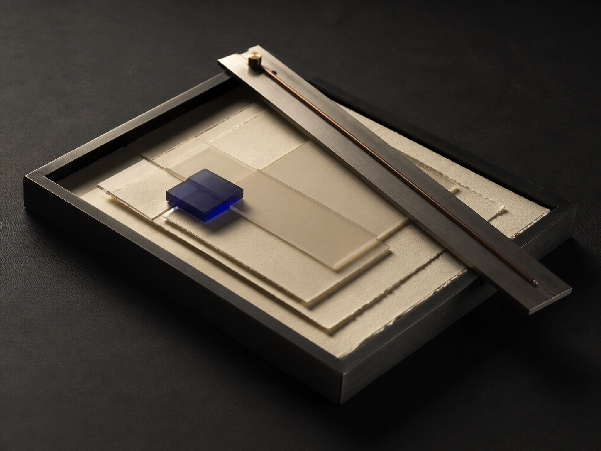

The anatomy of a useful question.
A practical way to distinguish the questions that open an idea from the ones that only delay it.
Documents
Guides, working notes, and clear language for a more deliberate way to learn.

Field guide / 09 min read
Not every question opens the same door. This short guide helps you ask for a definition, a smaller case, a prediction, or a connection at the moment each one is useful.
Read the guideA practical way to distinguish the questions that open an idea from the ones that only delay it.
How a learning path becomes a structure you can use after the session is over.
Use one clear prompt, a little quiet, and an honest answer to keep a topic alive.
Why translating a concept into your own words reveals the exact part that still needs attention.
A simple process for picking up a difficult subject after a useful interruption.